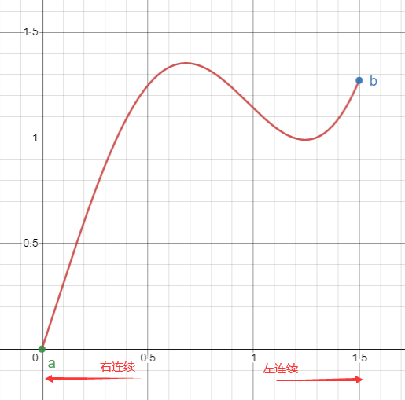
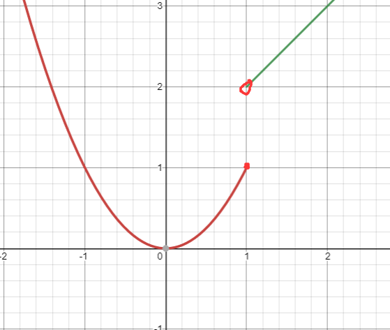

函数的连续性
一、连续与间断
- 定义1：函数在 有定义，若 ，则称 在点 连续， 称为连续点。否则，称 在点 不连续（间断）， 称为间断点。
定义： 在点 连续 时， 成立
自变量的改变量 ，因变量的改变量 ， 在 连续
- 定义2：若 在 内每一点均连续，则称 在 上连续，是 上的连续函数。
例题
-
生动理解连续性


-
证明在 上任意点均连续
证：：
- 定义3：左连续 ，右连续
 - 定义4： 在 连续，且在 处右连续，在 处左连续，则 在 上连续，是 上的连续函数
- 定理：，
-
判断 在处的连续性
解：图象如下：
函数在 不连续，左右极限存在
，左连续
，非右连续 -
在点 连续，，证：
在 连续
，当 时， 成立
取 ，则 ，得证
局部保号性
二、间断点的分类
- I类，左右极限都存在
- 相等：可去间断点，如
- 不相等：跳跃间断点，如
- II类，不属于I类，至少一个极限不存在
- 无穷大：无穷间断点，如
- 振荡间断点，如
例题
-
，讨论间断点类型
解： 和 是间断点
，，，是I类跳跃间断点，是II类无穷间断点 -
在点 连续 或 在 连续
：，
三、连续函数的性质
- 定理1（四则运算）连续函数间作和、差、积、商运算，结果仍为连续函数
结果在公共定义域上连续，如，则 在 上连续
- 定理2： 在点 上连续， 在点 连续， 在 上连续
- 推论：若 ，则
例题
-
计算极限
-
连续，证明：、 连续
证：
- ，
- ，
， 是连续函数
同理，， 是连续函数，得证
- 定理3. 基本初等函数在定义域上连续，初等函数在定义区间上连续
-
，，讨论 的连续性
解：
在 上连续， I类跳跃间断